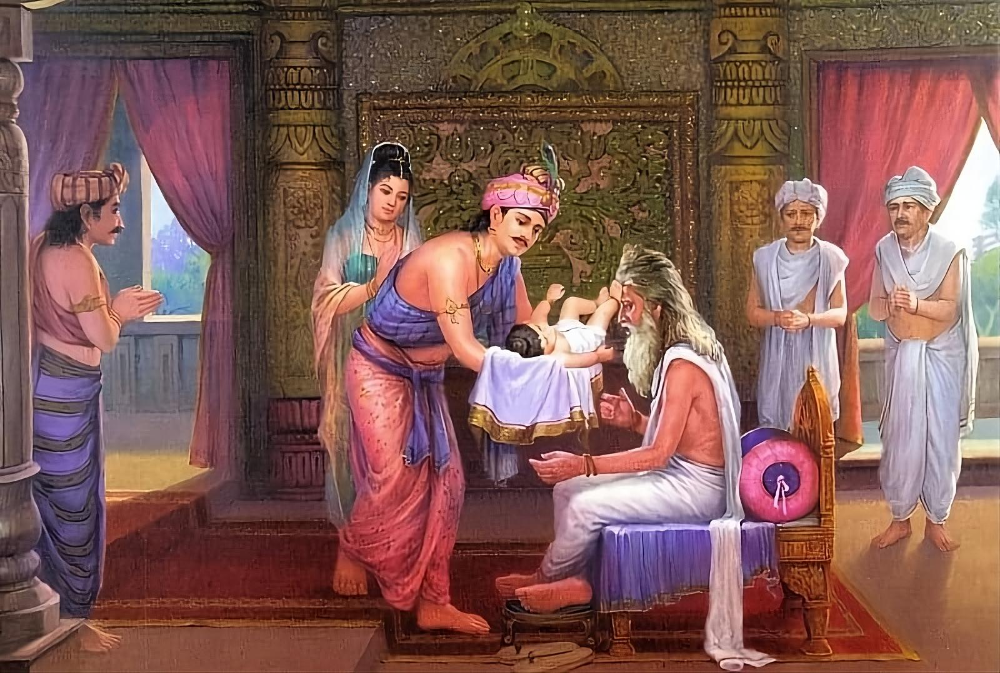

Namo tassa bhagavato arahato sammāsambuddhassa
Homage to the Most Venerable One, the Arhat, the Self-Awakened One
Namo tassa bhagavato arahato sammāsambuddhassa
Homage to the Most Venerable One, the Arhat, the Self-Awakened One
Namo tassa bhagavato arahato sammāsambuddhassa
Homage to the Most Venerable One, the Arhat, the Self-Awakened One
Sabbapāpassa akaraṇaṃ,
Do no evil
Kusalassa upasampadā ;
Accumulate good things
Sacitta pariyo dapanaṃ,
Encourage your mind to comprehend
Etaṃ buddhāna sāsanaṃ
This is Buddha's teaching.
In the picture, Raja Suddhodana, the father of Siddhartha, shows his son to the sage Asita.
Asita: A sage and spiritual master of Sihahanu, the father of Suddhodana. He taught various sciences to Suddhodana and later became his spiritual master. He used to come morning and evening to visit King Suddhodana, who had shown him great respect even when he was his disciple.
According to Buddhaghosa (SnA.ii.483), Asita got his name from his dark complexion. He also had another name, Kanha Devala (SnA.ii.487). He was also called Kanha Siri (Sn.v.689), Siri Kanha (SnA.487), or Kala Devala (Ji54). He is obviously to be distinguished from Asita Devala, who was also called Kala Devala.
Next we give as an example the Nālaka Sutta (Snip 3.11), which is perhaps one of the earliest sources of the stories about Asita and his nephew Nalaka.
(Source: theravada.ru)
Nalakka Sutta
Asita, spending the rest of the day,
looked at the devas of Tavatimsa - joyful, happy. In clean clothes, honoring Indra, They carried ribbons, and this way and that proclaimed praise. (1)
Seeing those devas joyful and jubilant,
He greeted them and said to them:
“ Why are all the devas celebrating so lavishly?
Why have you taken ribbons and are waving them all the time?” (2)
There was a battle with the Asuras once.
The gods won a victory over the Asuras.
There was no such excitement then.
What kind of miracle did the gods see that they rejoice? (3)
They whistle, sing and play music;
They clap their hands, dance here and there.
I ask you, the dwellers of the Meru peak:
Venerable ones, dispel my difficulty ." (4)
[ Devas]:
“ In the village of Lumbini in the domain of the Sakyans,
the Bodhisatta was born – peerless, a gem – In the world of people, for the benefit and happiness. That is why we are happy, we celebrate magnificently. (5)
He is the best of all and the highest personality,
the leader of men and the best of creatures.
And in the grove he will start the wheel, roaring like a mighty lion, like the lord of beasts ." (6)
Hearing these words, Asita quickly came down,
and then went to Suddhodana's dwelling.
Having sat down there, he addressed the Sakyans:
" Where is the prince? I would like to see him too ." (7)
And the Sakyas showed their son Asita –
He was radiant with greatness, excellent in color [of skin];
That prince shone like gold that sparkles
At the entrance to the furnace of a skilled craftsman. (8)
Seeing the prince, who is blazing like a flame with a crest,
Or the moon, the lord of the stars, who moves across the sky,
Or the sun in autumn, freed from the clouds -
Already contented, he found unbridled joy. (9)
The gods held an umbrella of a thousand circles in the sky,
Each circle had many rods of the umbrella.
Golden chamars flew up and down,
But the umbrella, and those who held the chamars – they were not visible. (10)
And with his hair tangled Asita " Black-Slavic "
He saw him - gold on a red blanket - With a white umbrella, held over his head. He took [the child] in his arms - contented and happy. (11)
Then, having accepted and studied the lion among all the Sakyans,
the Expert in [sacred] hymns and [bodily] signs
In [his] mind [he] rejoiced, [joyfully] he cried out:
“ He is unsurpassed, among two-legged ones the best .” (12)
Well, then he remembered his departure,
And he shuddered, he burst into bitter tears.
The Sakyans, seeing the rishi crying, asked:
" What misfortune awaits the prince? " (13)
Seeing the shocked Sakyans, he replied:
“ No, I do not foresee any misfortune for the prince.
He will not have any obstacles,
not even the slightest, so calm down. (14)
The prince will attain the highest enlightenment;
And with the highest pure gaze, with compassion for others,
He will set the wheel of Dhamma in motion;
And his holy life will spread widely. (15)
But the remainder of my life is short,
And in the interval [of this] death will occur.
I will not hear the Dhamma from the strong spirit,
And therefore I am worried, I suffer, I am depressed ." (16)
Thus, having brought unbridled joy to the Sakyam,
That holy man left their palace.
But out of compassion he told his nephew
That he should come to the Dhamma with a strong spirit. (17)
“ When you hear from another the word ‘ Buddha ’,
[ And the phrase] ‘ he who has attained enlightenment,
And he reveals the highest Dhamma ’ –
Go to him, inquire about the doctrine,
And under that Blessed One lead a holy life .” (18)
And having received the parting words of the benevolent one,
Whose foresight was supreme and pure,
Nalaka with an abundance of accumulated merits
Awaited the Conqueror and protected the senses. (19)
And hearing the rumour that the Conqueror
had set the wheel in motion, which is excellent,
He came and saw the supreme Rishi, and was pleased.
Since the moment of Asita's instructions had come,
He asked the sage about the supreme wisdom. (20)
[ Nalaka]:
“ This statement of Asita
has been known by Me as truth and correct.
Therefore I will ask you, O Gotama,
He who has gone beyond phenomena. (21)
Since I now live a homeless life,
Seeking my livelihood from alms,
Being asked, sage, be kind enough to explain
to me about wisdom, about the highest of paths " (22)
[ Buddha]:
" Yes, I will tell you about wisdom,
It is difficult to master, it is not easy to perform.
So, I will tell you about it [now],
Be prepared for this and show steadfastness. (23)
You must have one [towards everyone] attitude,
When you are praised and scolded in the village.
You must not allow malice in your mind, You
must be calm, not rejoicing [at praise]. (24)
The impressions are varied - both high and low, And they appear like a forest flame. And the sage and women try to captivate - Do not allow yourself to succumb to temptation. (25)
And having weaned yourself from sexual intercourse,
Having abandoned refined and gross pleasures,
You should not be hostile, attached
To the living - whether they are strong or weak. (26)
[ Realize]: “ They are like me,
For what they are, that is what I am .” Take yourself as a measure, Do not kill yourself, do not force others. (27)
Having abandoned both desires and greed,
To which the ordinary man is attached,
The Seer should practice in such a way
that he can cross this underworld. (28)
Without filling the belly, moderate in food,
Be one who is without aspirations and without many desires.
Be not hungry in regard to desire,
[Be] desireless, [be] one who is extinct. (29)
And having wandered about, collecting alms,
You should then retire to the forest.
Staying at the foot of a tree,
The sage should create a seat. (30)
Steadfast, aiming at jhana,
He should find joy in the forests.
Let him meditate under a tree, sitting,
And make himself contented. (31)
And after, after the night has passed,
he should go to the village,
But let him not accept invitations,
Nor gifts brought from the village. (32)
When the sage has [already] come to the village,
Let him not be rash among the families.
Having cast aside the talk of obtaining food,
Let him not speak hinting words. (33)
" I received something good [today];
I received nothing, but there is no problem in that ."
In both situations, let him be impartial,
And let him return to the tree himself. (34)
[ Everywhere] wandering with a cup in his hands,
He is not mute, although he is considered so –
He should not look down on a small gift,
He should not despise the one who gives the gift. (35)
The Ascetic taught the higher and lower practices
.
They do not lead to the distant shore by two paths;
[Yet] they cannot be survived by one path. (36)
By paths the Commentary understands the four Buddhist paths – the path of stream entry , one-time return , non -return , and arahantship . “ Two paths do not lead to the far shore ” is explained as meaning that the defilements of the mind discarded by each path should not be discarded again later . The last line , “ one path cannot experience them all ” is explained as meaning that one path is not capable of discarding all the defilements of the mind at once and one cannot attain enlightenment by just one path ( meaning one path of stream entry , i.e. one must then attain the other remaining paths and fruits ) .
He who has no spreading,
In that monk who has cut off the flow,
Having cast aside what needs to be done and what is not needed,
There is no [more] heat [of impurities]. (37)
I will describe wisdom to you,
You must see it as a razor blade,
And pressing your tongue to the roof of your mouth,
Exercise control over your own stomach. (38)
Commentary : " Having heard these verses , the elder Nalaka thought : ' If wisdom consists only in this , then it is easy to accomplish , not difficult , one can accomplish it without any trouble .' Therefore , showing that wisdom is in fact difficult to accomplish , the Blessed One said : ' Wisdom I will describe to you .' ' You should see in it a razor's edge ' - the razor's edge is a metaphor for this . What is the meaning ? A monk practicing wisdom should use the monastic necessities , taking into account the example of a razor's edge . When one licks a razor's edge smeared with honey , one protects one's tongue from being cut . In the same way , when one uses the righteously acquired [ monastic ] necessities ( food , shelter , clothing , medicine ), one should guard the mind from the defilements that arise . To obtain necessities in a pure way is not easy , nor is it easy to use them without reproach . That is why the Blessed One speaks so much about confidence in relation to necessities . " And pressing your tongue to the palate , exercise control over " one's own stomach " - pressing the tongue to the palate , dispelling the thirst for tastes , not using the acquired needs in a polluted way , one should exercise control over one's own stomach "
There is no need to remain with a sluggish mind,
Nor with one that is immersed in thought.
Live uncontaminated, unattached,
And let the holy life be your support. (39)
And train yourself on a solitary seat,
And train yourself in the ascetic exercises.
This solitude is called wisdom.
And if you delight in solitude,
Then you will illuminate the ten directions. (40)
When you hear praise from the wise,
Who meditate, having abandoned the pleasures of the senses,
[You], my follower, should develop
More shame, and also more faith. (41)
The qualities mentioned here are " hiri " and " saddha ." The former is a sense of shame when committing wrongdoing ; in the suttas it is usually mentioned in conjunction with the quality of fear of wrongdoing ( ottapa ). The latter is the ability to trust someone or something ; it is one of the " five powers , " critical qualities needed to advance on the Buddhist path .
Understand this through the rivers , the crevices and the ravines . At the mouths the stream makes noise , the river itself is silent . (42)
The empty can only make noise , But the full is silent . A fool is like a barrel that is half empty , A wise man is like a lake that is overflowing with water . (43)
When the Hermit speaks so much , It is all meaningful , [ all ] useful . For knowing , [ the Buddha ] teaches the Dhamma ; Knowing , [ the Buddha ] speaks much . (44 )
But he who , knowing , has restrained himself , Who , knowing , does not say much : This sage is worthy of wisdom , This sage has achieved wisdom ." (45)
Bhikkhu Bodhi's Commentary on the Nalaka Sutta : Nalaka Sutta : Nalaka ( Sn 3.11)
The Nalaka Sutta consists of two separate parts , but connected by a semantic thread . The first is the introductory stanzas ( vatthu - gatha ), and the second is the verse itself , which tells about the practice of achieving the state of a sage .
The opening stanzas tell the story of Asita , who came to Kapilavatthu to see the infant , the future Buddha . Asita learned of his birth from the gods . This verse appears to be the earliest poetic version of the meeting between Asita and the Buddha .
Here we find the only word " bodhisatta " in the entire Suttanipata , and it seems to hint at the more florid descriptions of the Buddha's life found in suttas such as MN 123 and similar texts . The events described in these verses form the basis of the familiar biography of the Buddha . We learn of Asita's stay among the gods , then his hasty departure for Kapilavatthu , his prediction of the Buddha's fate , his joy that the Enlightened One had been born into the world , and his sorrow that he himself would soon die and thus miss the opportunity to hear the liberating Dhamma .
The thread of the narrative that connects the vatthu - gatha with the rest of the verse is the advice that Asita gives to his nephew Nalaka , mentioned at the end of the introductory stanzas . He tells Nalaka that as soon as he hears that the Buddha has begun to preach , he should seek him out and lead a holy life under his teaching . At this point in the verse, events begin that must take place at least thirty - five years later , that is , after the Buddha had attained Buddhahood .
Now Nalaka himself meets the Buddha personally and asks him to explain what wisdom consists of .
Texts from other early Buddhist schools also attest to a connection between Asita and his nephew , whom he advised to visit the Buddha . Although the names and details may vary according to different sources , the very connection between them on the main issue suggests a common , earlier source . This may have been an oral narrative recounting the actual relationship between the old sage who predicted the Awakening to the infant and the younger nephew whom he advised to become the Buddha 's disciple .
In introducing himself to the Buddha , Nalaka mentions Asita , which connects the introductory story with part of Nalaka's instruction . When Nalaka meets the Buddha , he does not immediately ask to be ordained as a monk , but asks about " wisdom " ( Pali moneiya ), the state of a " sage " ( muni ), and the practice of attaining such a state . In response , the Buddha explains in detail the practice prescribed for a monk determined to attain the ultimate Buddhist goal in this very life . In light of the distinction between one who aspires to wisdom and one who has already attained it , the practice is described for one who still wishes to attain it . In this regard , the description of the practice differs significantly from the " staged practice " that the Buddha usually gave to newly ordained monks in the vast majority of suttas in the canon . The instruction contained in this sutta was obviously intended for a disciple with mature spiritual qualities , that is , for one who was ready to undertake the steep climb to the very pinnacle of spiritual realization . . Therefore, the Buddha warns Nalaka from the very beginning that he will describe a training that is “ difficult to master , not easy to perform ,” and for which the listener must “ be prepared in advance and show steadfastness ” ( verse 23).
The verses instruct the ascetic to maintain impartiality whether he is insulted or praised , to be wary of attractive women , to behave appropriately when begging , to eat moderately , to be impartial in dealing with gifts , and to retire to retreats suitable for meditation . The verse particularly recommends living in the forest and at the foot of a tree ( verse 30). There is no insistence on the vow of silence , an idea attributed to " wisdom " in the later Indian tradition . However , restraint in speech is emphasized , and in this regard it is said in particular : " at the mouths the stream roars , the river itself is silent " ( verse 42).
(Source: theravada.ru)
After the death of King Sihahanu, Asita left worldly life. After some time, he developed skills in attaining jhanas and various supernormal abilities and from then on spent the entire day in the worlds of the devas.
This is how it is described in the Buddhavaṃsa:
On the very day that the newborn prince and his mother were brought back to the city of Kapilavatthu, the Tavatimsa devas, led by Sakka, rejoiced to hear, “King Suddhodana has given birth to a noble son,” and that “he will certainly become Awakened,” and they threw their robes into the air, clapped their hands, and indulged in joy.
At that time, the ascetic Kanhadevila (Asita), who had attained the five super-knowledges and eight attainments and who often visited the palace of Raja Suddhodana, dined there as usual and went to the world of Tavatimsa to spend the daytime in that heavenly world. He sat on a throne of precious stones in a jeweled palace, enjoying the bliss of absorption (jhāna). When he emerged from his absorption, standing at the palace gate and looking around, he saw that Sakka, the king of the gods, was joyful and the other devas were throwing up their headdresses and extolling the virtues of the Bodhisatta on the main road of 60 leagues. He asked, “Devas, what makes you so happy and playful? Tell me the reason.”
To this the devas replied, "Venerable sir, today a noble son has been born to King Suddhodana. This noble son, sitting cross-legged under the bodhi tree in the most sacred place in the entire universe, will attain omniscient Self-Awakening. He will then set in motion the Wheel of Dhamma (Dhamma-chakka). In this way we will have the opportunity to see the boundless glory of the Buddha and hear his supreme discourse on Dhamma. That is why we indulge in joy."
Hearing the reply of the devas, Kanhadevila quickly descended from Tavatimsa and took his place prepared in the palace of King Suddhodana. After exchanging words of greeting with the king, Kanhadevila said, "King, I have heard that a noble son has been born to you. I would like to see him." The king then had his son brought to him and carried him straight to Kanhadevila. When the prince was brought to the ascetic, the prince instantly raised both his feet and placed them on the ascetic's matted hair, as if a streak of lightning had flashed on top of the dark blue clouds.
As the comment explains:
There is no one to whom the Bodhisatta, who is in his last existence, could pay homage. If someone, unknowingly, were to place the Bodhisatta's head at Asita's feet, Asita's head would split into seven pieces.
Asita, recognizing from the prince's behavior his wonderful and extraordinary glory and power, decided, "I should not destroy myself." Then, rising from his seat, he paid his respects to the prince by bowing down to him with folded hands. Seeing this wonderful scene, King Suddhodana also bowed down to his son.
Asita, with the five super-knowledges and eight attainments, could recall the events of the past 40 aeons (kappa) and also foresee the events of the future 40 aeons. Thus he was able to discern the events of the 80 aeons. And he was the most skilled among those who could see and interpret the bodily signs, connecting them with the past and the future.
Having studied the prince's major and minor physical signs, Kanadevila wondered whether the prince would become a Buddha or not, and through his wisdom of foresight he knew that the prince would certainly become a Buddha. Realizing this, he was overcome with uncontrollable delight and laughed.
Once again, Kanadevila wondered whether he would see the young prince attain Buddhahood. With his foresight, he realized that before the young prince became a Buddha, he himself would die and be reborn in the formless abode of Brahmas, where he would not be able to hear the immortal Dhamma even if hundreds and thousands of Buddhas came and taught it. “I will not have the opportunity to see and worship this wonderful being, endowed with the unique merits of perfections. For me, this will be a great loss.” Having said this, and filled with immense sorrow, he wept bitterly.
When the courtiers saw Asita laughing and crying, the following thought occurred to them: “Our venerable hermit first laughed and then cried, which is truly strange.” Then they asked: “Venerable sir, is there any danger that may befall our lord’s son?” “The prince is in no danger, he will become a Buddha.” “Then why are you lamenting?” the people asked again. “Because I will not have the opportunity to see the attainment of Enlightenment by an extraordinary person endowed with such wonderful qualities, and this will be a great loss for me. Thinking like this, I am lamenting,” he replied.
The above narrative is compiled in accordance with what is described in the commentaries to the Chronicles of the Buddhas (Buddha-vaṃsa) and the Birth Story (Jātaka), and in the subcommentaries to the Ornaments of the Conqueror (Jinālaṅkāra).
In some prose works on the life of the Buddha, the story goes like this: When King Suddhodana asked, "At what age will the prince renounce the world and attain Buddhahood?" Asita replied, "At the age of 35." This passage is an inference from Asita's words to his nephew Nalaka: "Dear Nalaka, King Suddhodana has a son. He will attain Buddhahood at the age of 35." The king was not pleased to hear that his son would become a Buddha. He wanted his son to be a Universal Monarch, not a Buddha. So he did not ask about the time of his son's renunciation and his becoming a Buddha. This is the reason for the absence of such a passage in the above commentaries and subcommentaries.
Having answered thus, the hermit Asita thought, “Although I will not see the prince become a Buddha, I wonder if any of my relatives will have the opportunity to witness it.” Then he foresaw that his nephew Nalaka would do so. So he visited his sister, summoned his nephew and said to him, “My dear nephew Nalaka, the birth of a son has taken place in the palace of King Suddhodana. He is a Bodhisattva. He will attain Buddhahood at the age of 35. You, my nephew, should not miss the chance to meet the Buddha. Therefore, you had better become a hermit immediately.”
Although young Nalaka was born to parents who had great wealth, he trusted his uncle and thought, "My uncle would not persuade me to do something that is useless. He did it because it can really bring benefit." With this conclusion, he ordered a cloth and a begging bowl to be bought, and as soon as they arrived, he immediately donned the robes of a hermit, saying, "Now I have become a hermit with devotion to the Buddha, the noblest person in the world."
Having said this, he turned towards Kapilavatthu, where the prince was, and bowed, raising his hands in reverence. After this, he put his bowl in his bag, slung it over his shoulder, and set out for the Himalayas. He devoted himself to asceticism, waiting for the Bodhisatta to awaken and become the Buddha.
On the fifth day after the prince's birth, his father, King Suddhodana, performed the head-washing ceremony and, wishing to give his son a name, ordered his palace to be filled with four kinds of fragrant powder: jasmine ( tagara ), cloves ( lavaṅga ), saffron ( kuṅkuma ) and cinnamon ( tamāla ), and strewn with five kinds of seeds: grass ( saddala ), two kinds of rice, mustard seeds and jasmine.
He also prepared pure milk rice without water and inviting 108 learned Brahmins who knew the three Vedas, gave them good seats in the palace and served delicious milk rice.
After feeding them, the Raja honoured them by making excellent offerings. Out of 108 Brahmins, eight of the most able were chosen and asked to predict the signs on the Prince's body. Among these eight chosen Brahmins, Rama, Daja, Lakkhana, Jotimanta, Yannya, Subhoja and Suyama, after examining the Prince's physical signs, raised two fingers each and made two alternative predictions: "If your son, endowed with these signs, decides to live the life of a householder, he will become a Universal Monarch ruling over the four great continents; however, if he becomes a monk, he will attain Buddhahood."
But Sudatta of the Kondanya Brahmin clan, the youngest of them, after carefully examining the signs of a Great Man on the prince, raised only one finger and decisively made one prediction: "There is no reason for the prince to remain in family life. He will certainly become a Buddha who will uproot the roots of defilements."
As the comment explains:
The young Brahmin Sudatta of the Kondanya clan was one whose present existence was his last, and who had previously accumulated much merit that would later lead him to attain Arahatship. Therefore, he surpassed the seven elder Brahmins in learning and was able to foresee the prospects of the prince that he would definitely become a Buddha. Hence his decisive declaration with one raised finger.
This recitation of the signs by young Sudatta, a descendant of the Kondanya family, with the raising of one finger, was accepted by all the other learned Brahmins.
The commentary explains:
It became possible for these Brahmins to read the physical signs of a Great Man such as Buddha and other noble men due to the following events: Astrological works were certain collections of prognostic materials concerning the signs of a Great Man (Buddha-mahā-purisa-lakkhaṇa). It is said that once upon a time, the Devas from the Brahma world descended to the human world in the guise of Brahmin teachers and taught people this teaching. Their idea was: "Those who have accumulated merit and mature intellect will be able to study these works of astrology, including the art of reading the signs of a Great Man, and will pass on this knowledge." That is why these Brahmins could read signs indicating, for example, the future becoming of Buddha and others.
There are 32 main signs that indicate that their owner is a Great Man or Bodhisattva. They are as follows (I decided to quote the description of these signs directly from the Canon, from DN30 Lakkhana Sutta):
(Source: theravada.ru)
Monks, what are these thirty-two signs of a great man, for the one who possesses them there are only two paths?
(1) Monks, a great man places his foot firmly.
(2) Further, monks, a great man has a wheel on his feet from birth. Each of them has a thousand spokes, a rim, a hub, they are filled with details in every respect.
(3) Further, monks, a great man has large feet.
(4) Further, monks, a great man has long fingers.
(5) Further, monks, a great man has hands and feet as soft as in youth.
(6) Further, monks, a great man has the imprint of his fingers and toes.
( The commentary explains that there is a kind of webbing between the toes and also that there is only a narrow space between one toe and the other.)
(7) Further, monks, a great man has high ankles.
(8) Further, monks, a great man has shins like those of an antelope.
( Comment: A species of black antelope said to have short legs. It is commented that the Buddha had smooth and straight shins.)
(9) Further, monks, when a great man stands straight, without bending over, both palms of his hands reach his knees, touch them.
(10) Further, monks, [the male organ] of a great man, which should be hidden under clothing, is hidden in him [in the body].
(11) Further, monks, a great man has a golden glow. And further, monks, a great man has golden skin of a golden color.
( COMMENTARY : The translation of the Pali word suvanna is golden ; beautiful ; the translation of the word vanna is appearance ; color ; shine , sparkle . Thus , one can make an alternative translation : beautiful appearance . However , most likely , the primary meaning of the word suvanna is used here : golden , - that is, we are talking about a golden radiance , a golden halo , the aura of a great person that radiates a golden radiance . And this is confirmed in the Maha - Parinibbana Sutta :
" And soon after Pukkusa of the Malla clan had departed , the venerable Ananda placed a shining robe of gold , ready for wearing , near the body of the Blessed One . But when the robe was put on the body of the Blessed One , it seemed to fade , its luster was dimmed . And then the venerable Ananda said to the Buddha :
- How wonderful , Teacher ! Truly , it is amazing how the skin of the Blessed One shines and glows . These gold-woven garments , shiny and ready to wear , now suddenly seem to have faded , their shine dulled after they were placed on the body of the Blessed One .
“ Yes , that is so , Ananda . There are two occasions , Ananda , when the Tathagata’s skin shines and glows extraordinarily . What are these two occasions ? It is on the night , Ananda , when the Tathagata attains unsurpassed Supreme Awakening , and on the night when the Tathagata finally passes away into Nibbana , completely freed from the factors of clinging . These are the two occasions , Ananda , when the Tathagata’s skin shines and glows extraordinarily . And it is today , in the last watch of the night , Ananda , in the Sala Tree Grove of the Mallas , near Kusinara , between the two Sala trees , that the Tathagata will enter into his Final Nirvana .”
The thesis that the skin is golden in color is connected with the previous position , they form together a paired thesis . That is, it turns out that this golden skin shines . Since , according to this sutta DN 30, the Buddha puts forward 34 theses , but this 11th thesis turns out to be a paired one , therefore it is said about 32 signs and not about 34.
)
(12) Further, monks, a great man has such perfect skin that sweat does not pollute the body.
(13) Further, monks, a great man has all the hair on his body, in every hair pore (i.e. in every hair follicle) there is a growing hair.
(14) Further, monks, the tips of a great man's hair are directed upward, the colour of the hair is black, like the colour of anjana.
( The commentary explains: Anjana (Pali and Skt. a?jana) is defined as collyrium, a black dye used to color the eyelashes and eyelids. Other translations of a?jana are ink, night. Therefore, the hair of a great man is black. Translations of the word nila (Pali and Skt. nila) vary. It can mean dark colors and shades. Basically, these are colors from dark blue, sapphire or indigo, to black (there may also be an admixture of green). One translation of nila is sapphire, another is the indigo plant (Indigofera Tinctoria). Perhaps this is the reason why the hair color of a great man is sometimes translated as blue. However, it seems that in this case nila simply means black or dark color.)
(15) Further , monks , a great man has a straight body like Brahma .
(16) Further , monks , a great man has seven convex places [ on his body ] .
( The commentary explains that these seven protrusions are on both arms , on both legs , on the shoulders and on the back )
(17) Further , monks , a great man has a physique like a lion .
( Comment explains : Probably referring to a strong build )
(18) Further , monks , a great man has a broad chest .
(19) Further , monks , the body of a great man is proportionate , like the girth of a banyan tree , as long as the body is , such is the distance between the outstretched arms ; as long as the distance between the outstretched arms is, such is the length of the body .
(20) Further , monks , a great man has symmetrical, rounded shoulders .
(21) Further , monks , a great man has the best sense of taste .
( The commentary explains that the Buddha could taste better because his tongue was not affected by the diseases of wind , phlegm and bile . )
(22) Further , monks , a great man has a chin like a lion .
( somewhat reminiscent of the chin of someone who is about to smile .)
(23) Further , monks , a great man has forty teeth.
(24) Further , monks , a great man has straight teeth .
(25 ) Further , monks , a great man has teeth that fit tightly together .
(26) Further , monks , a great man has perfectly white teeth .
(27) Further , monks , a great man has a great tongue .
(28) Further , monks , the voice of a great man is like the voice of Brahma , it sounds like the singing of the karavika bird .
( The commentary explains : The karavika bird ( Pali karavika, Sanskrit kalavi?ka) is an Indian cuckoo ; a bird with a beautiful voice , living in the Himalayas . This comparison means that the voice of a great person is pure and melodious )
(29) Further , monks , a great man has eyes with very blue pupils .
(30) Further , monks , a great man has eyelashes like a calf .
( very soft and thick .)
(31) Further , monks , in the region between the eyebrows of a great man grows hair soft as cotton .
(32) Further , monks , a great man has unhisa on the crown of his head . ( Pali unhisa – a bulge on the crown of the head )
" Bhikkhus ! The thirty- two marks of a great man are also well known by various representatives of other teachings . However , they do not understand by what kamma these marks are acquired ."
The Bodhisatta performed a hundred times more meritorious deeds than all other beings combined, over countless world periods. Hence, his merits are known as the hundred-fold merit ( sata-punya ), due to which he acquired the 32 major and 80 minor marks of a Great Man.
Having carefully examined the prince's major and minor qualities, the learned Brahmins made a prediction: "The prince will attain Buddhahood." Having discussed among themselves the question of naming the prince, they gave him the name Siddhattha, as an omen that he would successfully accomplish the task for the benefit of the whole world.
At the time of the Prince's birth, the learned Brahmins chosen to read the signs included Rama, Dhaja, Lakkhana, Manti, Kondanya, Bhoja, Suyama and the five-year-old Sudatta, headed by Kondanya. After the prediction that "the Prince will certainly become a Buddha," they presented the gifts they had received at the prediction ceremony to their families and donned the robes of hermits, dedicating themselves to Siddhattha, for they had concluded, "This Great Man will not remain in the house and will certainly attain Buddhahood."
These Brahmins had been well versed in the Vedas since childhood and were recognized as teachers. They had agreed among themselves to renounce the world at an early age, thinking, "We will not be able to sever ties with our families once we get married. Therefore, it is better for us to retire early." Hence their devotion to the Bodhisatta immediately after the prophecy, when they were still young.
Having settled in the forest dwellings, they sometimes asked the laymen: "Friends, has the young prince renounced the world?" "He is still enjoying royal luxury among the dancing girls in all three palaces, as if he were a divine being," the people replied. Then the Brahmins, thinking that "the wisdom of the prince has not yet matured," continued to calmly await the moment of his renunciation.
The story recorded in the commentaries ( Buddha-vaṃsa and Jātaka ) is as follows:
Having named Prince Siddhattha, the eight chosen learned Brahmins went home, called their sons and said, "Dear sons, we are now at an advanced age. Prince Siddhattha, the son of our Rajah, will certainly become Awakened. However, we do not know for sure whether we will see the young prince attain Buddhahood. When he does, adopt the ascetic way of life in the teachings of this Buddha."
Of the eight learned Brahmins, seven lived to old age, but died before the Prince renounced the world and were reborn in good or bad existences according to their deeds. Only Kondañña lived to this time in good health. When the Prince reached middle age and renounced the world, he went to the forest of Uruvelā and thought: “How wonderful this land is! It is pleasing to one who is inclined to engage in the cultivation of the mind.” And while the Bodhisatta was practicing asceticism ( dukkara-cariyā ) in that forest, Kondañña, hearing the news that “The Prince has become a recluse,” approached the sons of the last seven Brahmins and said: “Respected ones! It is said that Prince Siddhattha has become a recluse. He will certainly attain Buddhahood. If your fathers were still alive, they themselves would go and practice asceticism today. If you yourself want to become hermits, come. I am going to follow the prince." Of the seven sons of the Brahmins, three remained laymen because they did not agree to renounce the world.
Only the remaining four agreed and became hermits under the guidance of Kondañña. These five people became known as the group of five monks ( pañcavaggiya ).